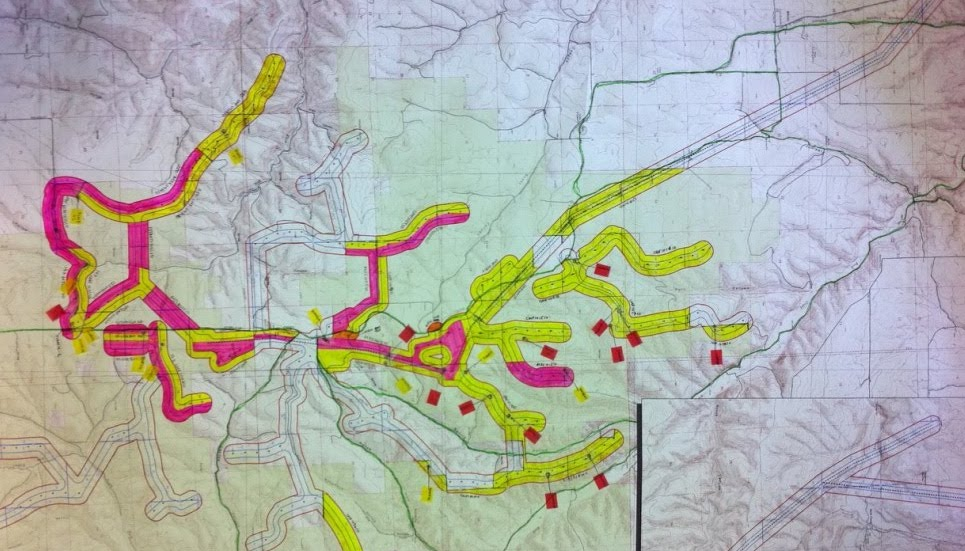

Story
I've spent a bit of time with maps. From Esri's ecosystem of "ArcProducts ™️" to open source tools like QGIS and OpenStreetMap, my career has been a journey of learning and discovery finding the right tools for the job. With titles like Analyst, Manager, or Cartographer, I always enjoyed crafting a story with a map.
Old GIS map.Early days, as an Environmental Consultant, I used GIS in several capacities: fuel modeling for large managed forests with Landsat data, mapping Desert Tortoise habitat in the Mojave Desert, and landcover analysis for the Lower Columbia River. And I’m proud of the impacts these projects had towards the preservation and conservation of sensitive lands.
And maps have not only been at the center of my career but also as an avid orienteer competing in national races running through the woods with nothing but a map, compass, and some navigational wit. What a nerd 🤓
Anyways, around 2013, I saw the writing on the wall -- web maps were hot and I leveled up my dev skills. By championing the open source tools like Leaflet and OSM, I was able to connect with colleauges at Mapbox and soon became their first dedicated support team member. I provided technical support to strategic customers worldwide. The diversity of customers kept me on my toes to understand the complexities of managing big data, working with complex APIs and SDKs, and creating fast, beautiful maps. While becoming well versed on the technical side of maps, I also became obsessed with understanding customer loyalty which in turn helped with product development and sales (read all my hot takes on what customer loyalty means to me here).

I've worked with hundreds of customers over the years on mapping problems. Everything from web to mobile, imagery to vector tiles, and cartography to geomatics. Complex spatial problems are my wheelhouse and I've always enjoyed helping people launch or improve their applications.
Well look at that, you made it this far. If you think we have some common ground, let's chat or have a peek at my Portfolio for some example work.